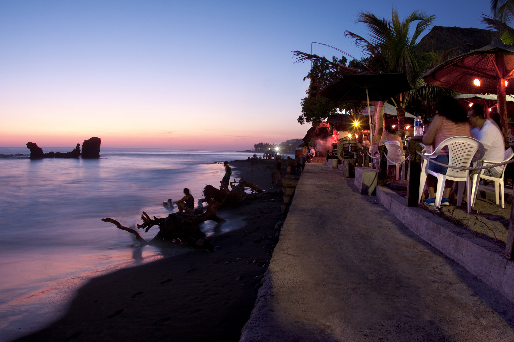
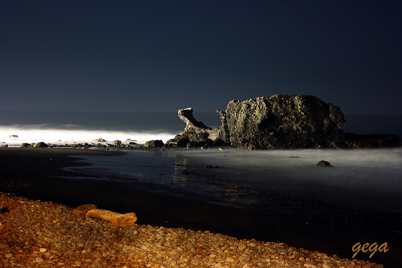
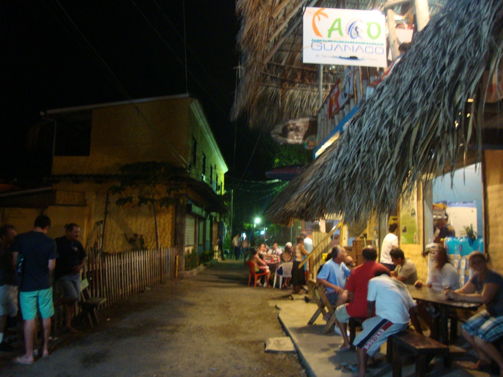

A la hora de visitar la playa el tunco se hacen distintas paradas como por ejemplo visitan restaurantes de la playa en donde turistas nacionales y extranjeros
disfrutan de ricos platillos y bebidas refrescantes, además de disfrutar de una bellísima puesta de sol.
Algunas personas no dejan pasar la oportunidad y optan por tomar un baño en la playa y lo hacen por sentirse con
una enorme seguridad ya que agentes de turismo están ahí para atender cualquier necesidad del turista.
Además de tomar un baño, los turistas pueden formar parte del surf nocturno y integrarse a las fiestas que se realizan en este lugar
|  |  |  |
Si quieres informacion acerca del lugar y registrarte a una de nuestros recorridos, usa el enlace de abajo para registrate.
Nosotros nos pondremos en contacto contigo!
-------->Reserva tu cupo <--------